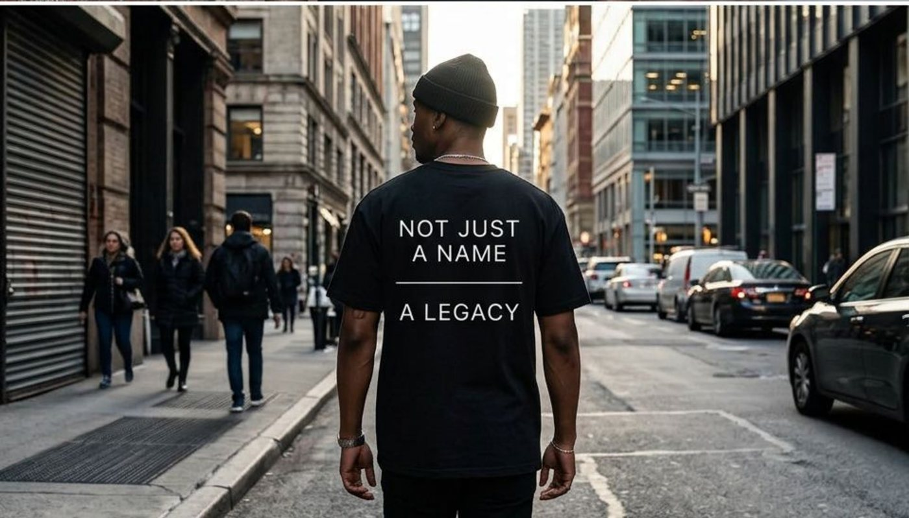
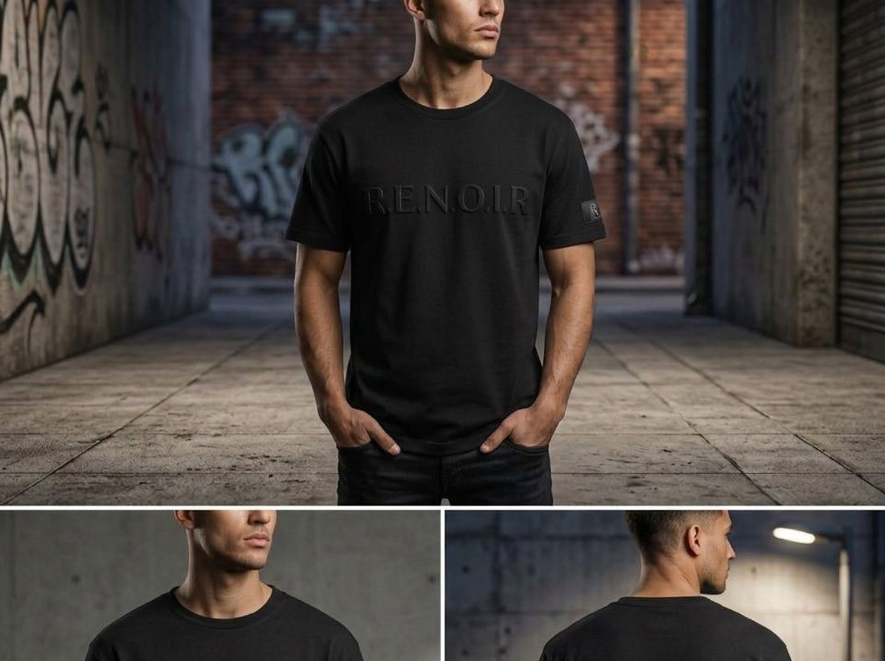
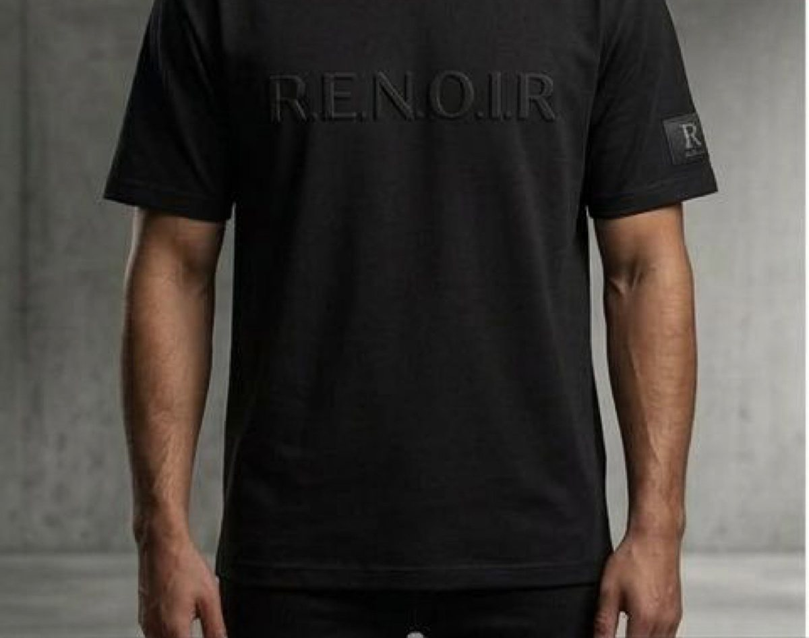
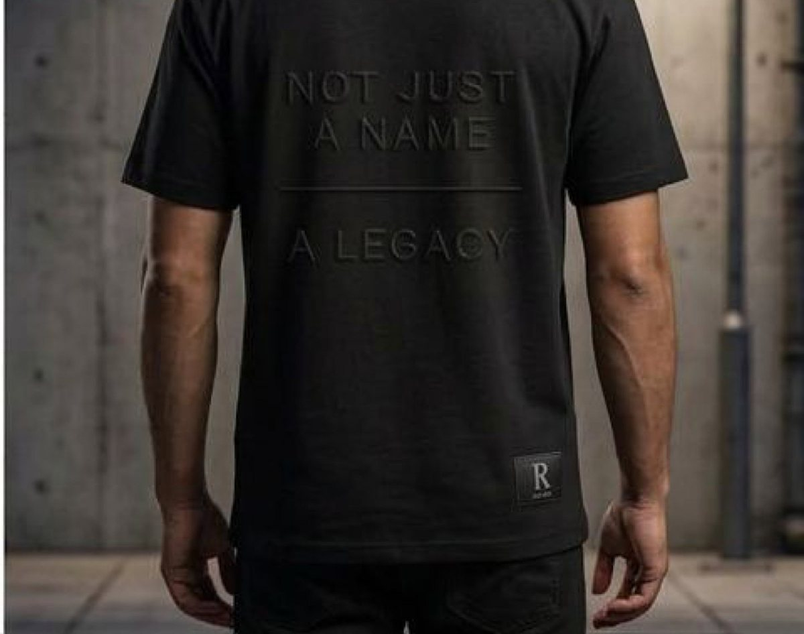

Étude de cas conceptuelle · Trouvé via Guru.com
R.E.N.O.I.R. — Collection Legacy
Design graphique de vêtements et visualisation de maquette assistée par IA pour la collection de lancement « Legacy » d'une marque de streetwear indépendante — des pièces t-shirt, veste et sac pour un mandat qui s'est terminé sans réponse du client après la livraison des concepts.
Aperçu et mon rôle
Une marque de streetwear indépendante avait besoin d'une identité visuelle prête pour le lancement sur une petite gamme de vêtements — avant même qu'une seule pièce n'existe physiquement.
R.E.N.O.I.R. a publié une demande de design sur Guru.com pour sa collection de lancement « Legacy » — un positionnement « streetwear minimaliste de luxe » construit autour d'un logotype ton sur ton et de la phrase « Not Just a Name — A Legacy » (Pas juste un nom — un héritage). Contrairement au modèle de piste multi-designers de Bark, Guru fonctionne davantage comme une proposition écrite : la portée et le prix sont convenus avant tout travail créatif. J'ai proposé un mandat à forfait fixe couvrant la direction graphique d'un t-shirt, d'une veste bombardier et d'un sac, ainsi que la visualisation de maquette premium pour chaque pièce — construite dans Kittl.com — pour que la marque dispose de vrais actifs de lancement avant de s'engager dans une production d'échantillons ou une séance photo.
- Concevoir le logotype et le traitement du slogan au dos pour le t-shirt, en deux coloris — un à fort contraste et un tonal (noir sur noir).
- Étendre le même langage graphique à une veste bombardier et à un concept de sac.
- Construire des maquettes au style photoréaliste pour chaque pièce, en remplacement d'une séance photo d'échantillon physique.
- Cadrer et tarifer le travail comme une proposition à forfait fixe via le système de soumission de Guru.
Phases du projet
-
Phase 1
Brief et proposition Soumission gagnante
Proposition Guru.com
Réponse à l'annonce Guru du client avec une proposition à forfait fixe pour le design du logotype et du graphique au dos sur trois pièces — t-shirt, veste et sac — ainsi que la visualisation de maquette pour chacune. Le client a accepté la proposition et partagé une direction de référence pour une ambiance « streetwear minimaliste de luxe ».
-
Phase 2
Graphiques et maquettes du t-shirt Livré
Livrable principal
Logotype avant et slogan au dos (« Not Just a Name — A Legacy ») en deux coloris — une version à fort contraste blanc sur noir et une version tonale noir sur noir — chacune rendue en ensemble de maquettes complet construit dans Kittl.com.
-
Phase 3
Concepts de veste et de sac Livré
Portée étendue
Le même langage graphique étendu à une veste bombardier et à un concept de sac, rendus en maquettes dans le même système visuel, complétant la première gamme proposée pour la collection.
-
Phase 4
Suivi client Aucune réponse
Statut du mandat
Tous les concepts ont été livrés dans les délais. Le client n'a pas répondu aux messages de suivi après la livraison — aucune révision n'a été demandée et aucune phase suivante n'a été confirmée. Le mandat est actuellement inactif, sans autre activité du côté du client.
Ce que le client demandait
- Un positionnement « streetwear minimaliste de luxe » — sobre, premium, sans graphique tape-à-l'œil.
- Un système de logotype et de slogan capable de se transposer sur plusieurs types de vêtements, plutôt qu'un seul imprimé vedette.
- Des maquettes prêtes pour le lancement, assez convaincantes pour le marketing de précommande, sans production d'échantillons encore en cours.
- Deux directions de coloris distinctes entre lesquelles choisir pour le lancement.
La difficulté principale : un brief véritablement minimaliste ne laisse presque nulle part où se cacher — sans imprimé ou logo tape-à-l'œil sur lequel s'appuyer, le placement exact du logotype et le rendu de l'éclairage et du tissu de la maquette devaient à eux seuls faire lire la pièce comme « premium » plutôt que comme « t-shirt uni avec du texte ».
Graphiques et maquettes du t-shirt
Les visuels de t-shirt livrés, dans les deux directions de coloris — un logotype à fort contraste photographié sur place, et une version tonale noir sur noir photographiée devant des décors de béton et de graffitis. Les concepts de veste et de sac ont suivi le même système, mais ne sont pas montrés ici.





Une précision sur ces images : chaque visuel de cette page est une maquette assistée par IA construite dans Kittl.com, et non de la photographie de produit — aucun échantillon physique n'a été cousu ni photographié. C'était tout le point du livrable : un visuel de prélancement convaincant que la marque pouvait utiliser avant de s'engager dans une production.
Ce qui a fonctionné
- Le logotype s'est transposé proprement sur les deux coloris et les deux orientations de vêtement (avant/dos) sans devoir être redessiné.
- Deux directions de coloris distinctes ont donné au client un vrai choix plutôt qu'un seul concept à prendre ou à laisser.
- Étendre le même système graphique à la veste et au sac a fait en sorte que la collection se lit comme une seule gamme plutôt que trois pièces sans lien.
- Livrer dans les délais a confirmé que le silence qui a suivi venait entièrement du côté du client, et non d'un retard de production de mon côté.
Défis et leçons
- Le modèle de proposition de Guru signifiait tarifer et cadrer trois types de vêtements avant même de voir comment le brief se résoudrait visuellement — un risque différent des mandats à livrable unique de Bark ou HoneyBook.
- Un brief minimaliste laisse peu de marge d'erreur : de petits choix de placement ou d'échelle sur le logotype faisaient la différence entre « premium » et « t-shirt uni générique ».
- Le mandat devenu silencieux après la livraison, sans demande de révision ni message de clôture, est la leçon la plus claire ici — j'intègre maintenant un message de suivi planifié à chaque proposition à forfait fixe, pour qu'une relation client qui stagne ait une dernière étape définie plutôt que de s'éteindre indéfiniment.
- Sans phase suivante confirmée, les concepts de veste et de sac restent non montrés publiquement au-delà de ce texte — un rappel que « livré » et « confirmé » sont deux jalons distincts, comme pour tout mandat conceptuel.
Statut actuel
Tous les concepts contractés — t-shirt (deux coloris), veste et sac — ont été livrés dans les délais. Le client n'a pas répondu depuis la livraison :
- Graphiques et maquettes du t-shirt — livrés, montrés ci-dessus.
- Concepts de veste et de sac — livrés, non montrés publiquement en attendant une éventuelle validation future du client.
- Fichiers de production, choix du coloris, et toute production d'échantillons — jamais atteints, mandat inactif depuis la livraison.
Besoin de visuels prêts pour le lancement avant qu'un échantillon n'existe?
Un système de logotype précis et une maquette solide peuvent porter un lancement avant qu'une seule pièce physique ne soit cousue. Si c'est l'écart dans votre gamme de vêtements ou de produits, parlons-en.